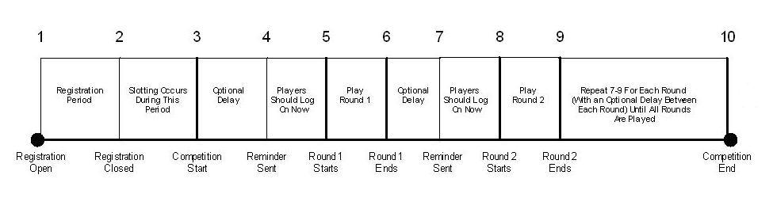

Competition events occur in the order shown below.

Your game sets the timing of the events in the timeline above using the XOnlineCompetitionCreateSingleElimination function. Specifically, it passes an array of XONLINE_COMP_SINGLE_ELIMINATION_ATTRIBUTES structures through the pDefaultAttributes parameter.
Note To query the competition's dataset for the value of its attributes, use the constants specified in the table for the pCompetitionAttributes parameter of the XOnlineCompetitionCreate function.
The first event whose timing your game must set (event 1 in the diagram above) is the opening of registration. During this period, players (or teams if this is a teams competition) register to participate, and the competition is in a preinitialization state. Players can register for public or private slots, depending on whether they've been invited to join. (For more information on public and private slots, see Joining a Competition.) When creating the competition, specify the date and time that registration opens using the ftRegistrationOpen member of XONLINE_COMP_SINGLE_ELIMINATION_ATTRIBUTES.
Note All of the competition's attributes that are dates and times must be specified in FILETIME format.
Event 2 on the timeline is the close of registration. Use the XONLINE_COMP_SINGLE_ELIMINATION_ATTRIBUTES structure's ftRegistrationClose member to set this. If not enough players have joined by the close of registration, the competition is canceled. If a sufficient number of players or teams have joined, the competition is considered active.
The third event is the start of the competition, which is specified with the ftCompetitionStart member. All players are slotted between the close of registration and the start of the competition.
For event 4, the competitions service sends a reminder to all players or teams who are slotted to participate in the first round. There can be an optional delay between the start of the competition and the transmission of the reminder. Set the reminder time with the dwMatchReminderAdvanceMinutes member. The timing of the reminder is based on the start time of the round (event 5 in the timeline). That is, your game sets the start time of round 1 using the ftRoundOneStart member and then provides dwMatchReminderAdvanceMinutes as an offset in minutes from the beginning of the round. Your game must also set the end time of round 1 (event 6) with the ftRoundOneEnd member. Players generally log on between the time the reminder is sent and the beginning of the round. However, this is not required. They can log on prior to the time the reminder is sent. All rounds are the same length as round 1. Therefore, the round length of all rounds is ftRoundOneEnd − ftRoundOneStart.
There is an optional delay between each successive round. It is possible for your game to extend rounds. If your game takes advantage of that capability, it is wise to allow a sufficient delay between rounds to account for round extensions. The delay between rounds is controlled by the XONLINE_COMP_SINGLE_ELIMINATION_ATTRIBUTES structure's Interval and UnitOrMask members. For more information on how they work, see Scheduling Rounds.
The scores for each round should be submitted immediately after the round ends. For more information, see Submitting Event Scores.
The pattern shown by events 7–9 in the timeline above is repeated for each round. After the last round ends, the competition also ends.
It is noteworthy that, in a given round, players may play events in the next round before the current round ends. However, they can only do this if both they and their opponent for the next round are finished with the current round and won their events.